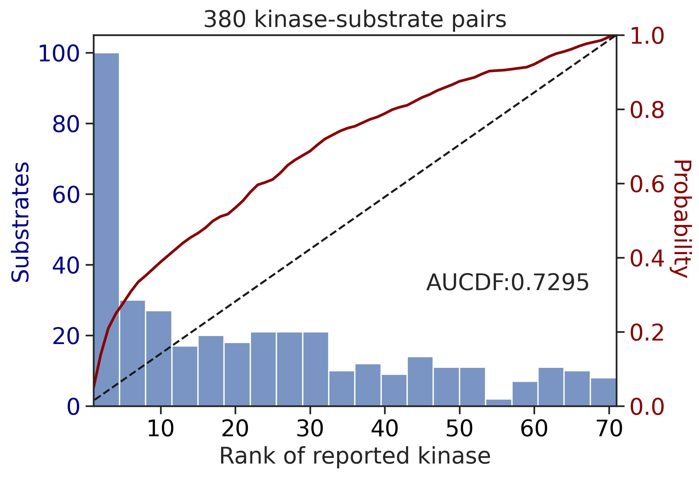
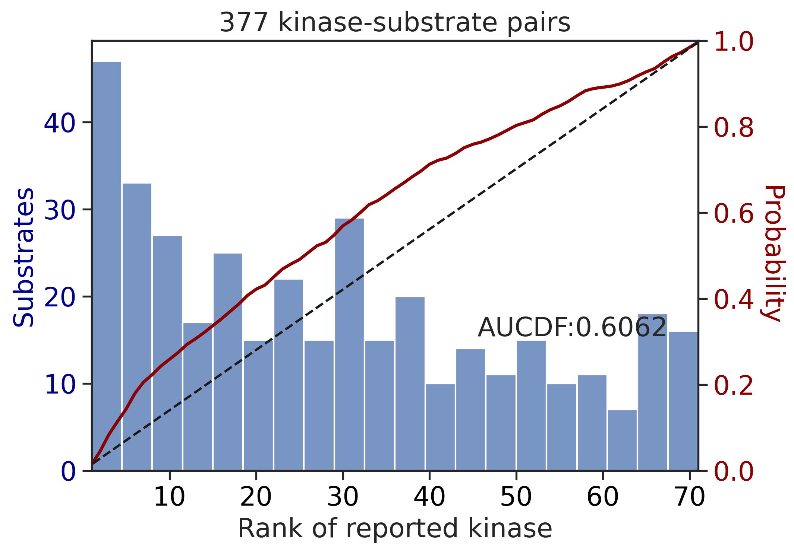
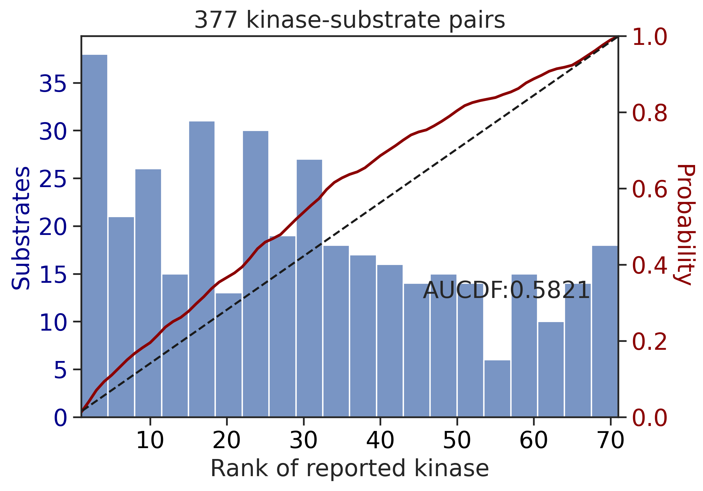
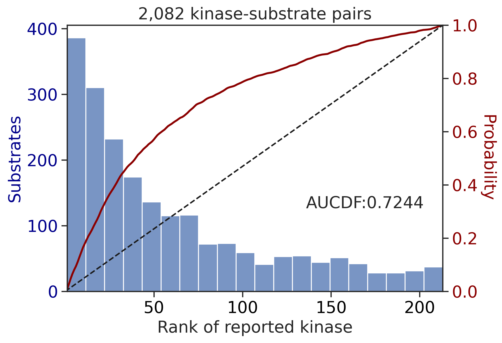
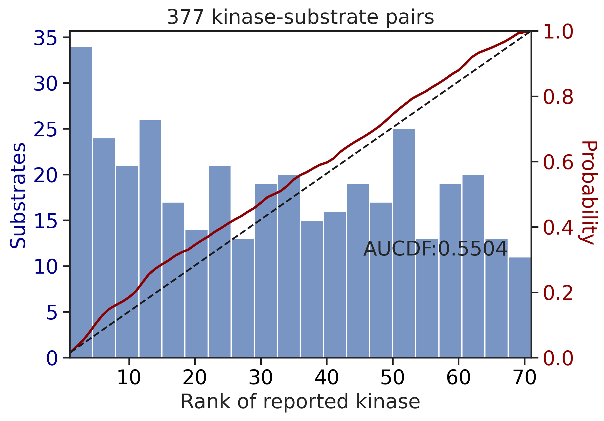
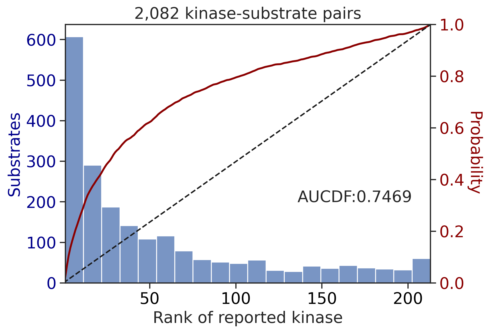
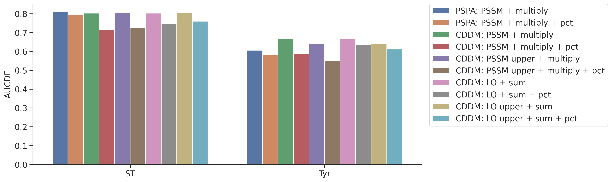
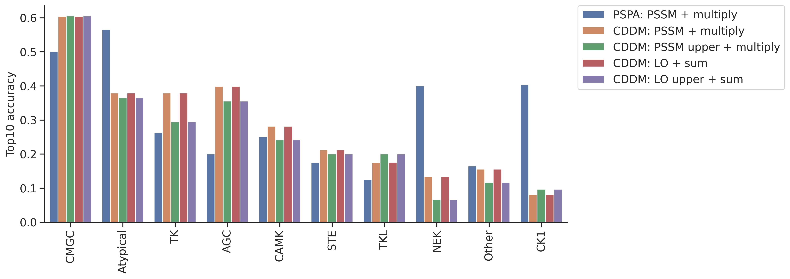

from katlas.core import *
from katlas.plot import *
import pandas as pd,numpy as np
from matplotlib import pyplot as pltScoring evaluation
Load PSSM/LO
LO = pd.read_parquet('out/CDDM_pssms_LO_eval_psp_02.parquet')pspa = pd.read_parquet('raw/overlap_pspa.parquet')LO.index = LO.index.str.split('_').str[1]
pspa.index = pspa.index.str.split('_').str[1]LO = LO[LO.index.isin(pspa.index)]LO.shape, pspa.shape((312, 943), (312, 236))Dataset to be scored
df =pd.read_parquet('out/CDDM_test_set.parquet')df['site_seq_upper'] = df.site_seq.str.upper()# only filter those with tested kinase
df = df[df.kinase_protein.isin(pspa.index)].copy()--------------------------------------------------------------------------- NameError Traceback (most recent call last) Cell In[4], line 2 1 # only filter those with tested kinase ----> 2 df = df[df.kinase_protein.isin(pspa.index)].copy() NameError: name 'pspa' is not defined
df.shape(2484, 24)def split_data(df):
df_st = df[df.kinase_group !='TK'].copy().reset_index(drop=True)
df_tyr = df[df.kinase_group =='TK'].copy().reset_index(drop=True)
df_st = df_st[df_st.site_seq.str[20]!='y'].copy().reset_index(drop=True)
df_tyr = df_tyr[df_tyr.site_seq.str[20]=='y'].copy().reset_index(drop=True)
return df_st, df_tyrdf_st, df_tyr = split_data(df)Scoring
group_map = df[['kinase_protein','kinase_group']].drop_duplicates().set_index('kinase_protein')['kinase_group']
TK = group_map[group_map=='TK'].index
ST = group_map[group_map!='TK'].indexdef split_ref(ref):
ref_st = ref[ref.index.isin(ST)].copy()
ref_tk = ref[ref.index.isin(TK)].copy()
return ref_st,ref_tkref_st,ref_tk = split_ref(LO)ref_st.shape, ref_tk.shape((213, 943), (71, 943))def get_kinase_rank(row_index,df,result):
kinase = df.loc[row_index, 'kinase_protein']
scores = result.loc[row_index]
ranked = scores.sort_values(ascending=False)
rank = ranked.index.get_loc(kinase) + 1 # +1 to make rank start from 1
return rankhuman =Data.get_human_site()CPU times: user 176 ms, sys: 224 ms, total: 400 ms
Wall time: 2.86 shuman['site_seq_upper'] = human.site_seq.str.upper()human = human.drop_duplicates('site_seq').reset_index()def score_data(df,ref,seq_col='site_seq',func=sumup,pct_ref=None):
df_st, df_tyr = split_data(df)
ref_st,ref_tk = split_ref(ref)
df_st_result = predict_kinase_df(df_st,seq_col=seq_col,ref=ref_st,func=func)
df_tyr_result = predict_kinase_df(df_tyr,seq_col=seq_col,ref=ref_tk,func=func)
if pct_ref is not None:
df_st_result = get_pct_df(df_st_result,pct_ref)
df_tyr_result = get_pct_df(df_tyr_result,pct_ref)
df_st['rank'] = df_st_result.index.to_series().apply(lambda idx: get_kinase_rank(idx,df_st,df_st_result))
df_tyr['rank'] = df_tyr_result.index.to_series().apply(lambda idx: get_kinase_rank(idx,df_tyr,df_tyr_result))
return df_st,df_tyr,df_st_result,df_tyr_resultdef get_ref(df, pssm, seq_col='site_seq', func=sumup, n_chunk=5):
chunk_size = (len(df) + n_chunk - 1) // n_chunk # ceiling division
pct_refs = []
for i in range(n_chunk):
start = i * chunk_size
end = min((i + 1) * chunk_size, len(df))
if start >= end:
break
print(f"Processing chunk {i+1}/{n_chunk} → rows {start}:{end}")
sub_df = df.iloc[start:end]
pct_ref = predict_kinase_df(
sub_df,
seq_col=seq_col,
ref=pssm,
func=func
)
pct_refs.append(pct_ref)
return pd.concat(pct_refs, ignore_index=True)# pct_ref = get_ref(human,LO)df_st_result = predict_kinase_df(df_st,seq_col='site_seq',ref=ref_st,func=sumup)input dataframe has a length 2082
Preprocessing
Finish preprocessing
Merging reference
Finish mergingdf_st_result_pct = get_pct_df(df_st_result,pct_ref)100%|██████████████████████████████████████████████████████████████████████████| 213/213 [00:00<00:00, 642.51it/s]pct_ref = predict_kinase_df(human.iloc[:len(human)//2],seq_col='site_seq',ref=LO,func=sumup)input dataframe has a length 58868
Preprocessing
Finish preprocessing
Merging reference
Finish mergingdf_st,df_tyr,df_st_result,df_tyr_result = score_data(df,LO)df_st['rank'].mean()41.78866474543708df_tyr['rank'].mean()np.float64(22.426315789473684)Top 5/10
def top_k_accuracy(df, result, k):
def is_in_top_k(row_index):
kinase = df.loc[row_index, 'kinase_protein']
scores = result.loc[row_index]
top_k = scores.nlargest(k).index
return kinase in top_k
return result.index.to_series().apply(is_in_top_k).mean()# top10_st = top_k_accuracy(df_st, df_st_result, 10)
# top10_tyr = top_k_accuracy(df_tyr, df_tyr_result, 10)# print(f"Top-10 ST accuracy: {top10_st:.3f}")
# print(f"Top-10 Tyr accuracy: {top10_tyr:.3f}")Group topk
def top_k_accuracy_group(group_indices,df,result, k=10):
def is_correct(row_index):
kinase = df.loc[row_index, 'kinase_protein']
scores = result.loc[row_index]
top_k = scores.nlargest(k).index
return kinase in top_k
return pd.Series(group_indices).apply(is_correct).mean()def get_topk(df,result,k=10):
grouped = df.groupby('kinase_group').groups
topk_scores = {
subfam: top_k_accuracy_group(indices,df,result,k=k)
for subfam, indices in grouped.items()}
topk_df = pd.DataFrame.from_dict(topk_scores, orient='index', columns=['top10_accuracy']).sort_values('top10_accuracy', ascending=False)
return topk_dfdef get_group_topk(df_st,df_tyr,df_st_result,df_tyr_result):
topk_st = get_topk(df_st,df_st_result)
topk_tyr = get_topk(df_tyr,df_tyr_result)
topk = pd.concat([topk_st,topk_tyr]).sort_values('top10_accuracy',ascending=False)
return topkdef get_results(df_st,df_tyr,df_st_result,df_tyr_result):
topk = get_group_topk(df_st,df_tyr,df_st_result,df_tyr_result)
aucdf_st = get_AUCDF(df_st,'rank')
aucdf_tyr = get_AUCDF(df_tyr,'rank')
return topk, aucdf_st,aucdf_tyrtopk,aucdf_st,aucdf_tyr = get_results(df_st,df_tyr,df_st_result,df_tyr_result)

topk| top10_accuracy | |
|---|---|
| CMGC | 0.637191 |
| Atypical | 0.452055 |
| AGC | 0.422397 |
| TK | 0.394737 |
| CAMK | 0.266289 |
| STE | 0.160494 |
| CK1 | 0.158730 |
| Other | 0.153846 |
| NEK | 0.125000 |
| TKL | 0.097561 |
percentile later
Overall
pspa
pspa = pd.read_parquet('raw/overlap_pspa.parquet')
pspa.index = pspa.index.str.split('_').str[1]
pspa.shape(312, 236)Data to be scored
df =pd.read_parquet('out/CDDM_test_set.parquet')df['site_seq_upper'] = df.site_seq.str.upper()# only filter those with tested kinase
df = df[df.kinase_protein.isin(pspa.index)].copy()df.shape(2484, 24)group_map = df[['kinase_protein','kinase_group']].drop_duplicates().set_index('kinase_protein')['kinase_group']
TK = group_map[group_map=='TK'].index
ST = group_map[group_map!='TK'].indexdef prepare_ref(path):
ref = pd.read_parquet(path)
ref.index = ref.index.str.split('_').str[1]
ref = ref[ref.index.isin(pspa.index)]
print(ref.shape)
return refcddm:
cddm = prepare_ref('out/CDDM_pssms_eval_psp_02.parquet')
cddm_upper = prepare_ref('out/CDDM_pssms_eval_upper_psp_02.parquet')
cddm_lo = prepare_ref('out/CDDM_pssms_LO_eval_psp_02.parquet')
cddm_lo_upper = prepare_ref('out/CDDM_pssms_LO_eval_upper_psp_02.parquet')(312, 943)
(312, 943)
(312, 943)
(312, 943)# ref_dict = {
# 'PSPA: PSSM + multiply': (pspa,'site_seq',multiply,False),
# 'CDDM: PSSM + multiply': (cddm, 'site_seq', multiply_23,False),
# 'CDDM: PSSM upper + multiply': (cddm_upper, 'site_seq_upper', multiply_20,False),
# 'CDDM: LO + sum': (cddm_lo, 'site_seq',sumup,False),
# 'CDDM: LO upper + sum': (cddm_lo_upper, 'site_seq_upper',sumup,False),
# }
# for name,(ref,seq_col,func,_) in ref_dict.items():
# print(name)
# pct_ref = get_ref(human,pssm=ref,seq_col=seq_col,func=func)
# pct_ref.to_parquet(f'raw/{name}.parquet')
# print(pct_ref.head())
# # breakref_dict = {
'PSPA: PSSM + multiply': (pspa,'site_seq',multiply,False),
'PSPA: PSSM + multiply + pct': (pspa,'site_seq',multiply, True),
'CDDM: PSSM + multiply': (cddm, 'site_seq', multiply_23,False),
'CDDM: PSSM + multiply + pct': (cddm, 'site_seq', multiply_23, True),
'CDDM: PSSM upper + multiply': (cddm_upper, 'site_seq_upper', multiply_20,False),
'CDDM: PSSM upper + multiply + pct': (cddm_upper, 'site_seq_upper', multiply_20,True),
'CDDM: LO + sum': (cddm_lo, 'site_seq',sumup,False),
'CDDM: LO + sum + pct': (cddm_lo, 'site_seq',sumup,True),
'CDDM: LO upper + sum': (cddm_lo_upper, 'site_seq_upper',sumup,False),
'CDDM: LO upper + sum + pct': (cddm_lo_upper, 'site_seq_upper',sumup,True),
}set_sns()topk_dfs = []
aucdf = pd.DataFrame()
for name,(ref,seq_col,func,use_pct) in ref_dict.items():
print('---------------------------------------------')
print(name)
pct_ref = pd.read_parquet(f'raw/{name[:-6]}.parquet') if use_pct else None # -6 to remove + pct from parquet name
df_st,df_tyr,df_st_result,df_tyr_result = score_data(df,ref,seq_col=seq_col,func=func,pct_ref=pct_ref)
topk,aucdf_st,aucdf_tyr = get_results(df_st,df_tyr,df_st_result,df_tyr_result)
topk_dfs.append(topk)
aucdf.loc[name,'ST'] = aucdf_st
aucdf.loc[name,'Tyr'] = aucdf_tyr---------------------------------------------
PSPA: PSSM + multiply
input dataframe has a length 2082
Preprocessing
Finish preprocessing
Merging reference
Finish merging100%|██████████████████████████████████████████████████████████████████████████| 213/213 [00:00<00:00, 280.99it/s]input dataframe has a length 377
Preprocessing
Finish preprocessing
Merging reference
Finish merging100%|████████████████████████████████████████████████████████████████████████████| 71/71 [00:00<00:00, 556.84it/s]

---------------------------------------------
PSPA: PSSM + multiply + pct
input dataframe has a length 2082
Preprocessing
Finish preprocessing
Merging reference
Finish merging100%|██████████████████████████████████████████████████████████████████████████| 213/213 [00:00<00:00, 289.36it/s]input dataframe has a length 377
Preprocessing
Finish preprocessing
Merging reference
Finish merging100%|████████████████████████████████████████████████████████████████████████████| 71/71 [00:00<00:00, 579.53it/s]
100%|██████████████████████████████████████████████████████████████████████████| 213/213 [00:00<00:00, 676.99it/s]
100%|████████████████████████████████████████████████████████████████████████████| 71/71 [00:00<00:00, 808.54it/s]

---------------------------------------------
CDDM: PSSM + multiply
input dataframe has a length 2082
Preprocessing
Finish preprocessing
Merging reference
Finish merging100%|██████████████████████████████████████████████████████████████████████████| 213/213 [00:01<00:00, 209.09it/s]input dataframe has a length 377
Preprocessing
Finish preprocessing
Merging reference
Finish merging100%|████████████████████████████████████████████████████████████████████████████| 71/71 [00:00<00:00, 475.58it/s]

---------------------------------------------
CDDM: PSSM + multiply + pct
input dataframe has a length 2082
Preprocessing
Finish preprocessing
Merging reference
Finish merging100%|██████████████████████████████████████████████████████████████████████████| 213/213 [00:00<00:00, 214.83it/s]input dataframe has a length 377
Preprocessing
Finish preprocessing
Merging reference
Finish merging100%|████████████████████████████████████████████████████████████████████████████| 71/71 [00:00<00:00, 469.76it/s]
100%|██████████████████████████████████████████████████████████████████████████| 213/213 [00:00<00:00, 687.25it/s]
100%|████████████████████████████████████████████████████████████████████████████| 71/71 [00:00<00:00, 816.89it/s]

---------------------------------------------
CDDM: PSSM upper + multiply
input dataframe has a length 2082
Preprocessing
Finish preprocessing
Merging reference
Finish merging100%|██████████████████████████████████████████████████████████████████████████| 213/213 [00:01<00:00, 201.05it/s]input dataframe has a length 377
Preprocessing
Finish preprocessing
Merging reference
Finish merging100%|████████████████████████████████████████████████████████████████████████████| 71/71 [00:00<00:00, 471.58it/s]

---------------------------------------------
CDDM: PSSM upper + multiply + pct
input dataframe has a length 2082
Preprocessing
Finish preprocessing
Merging reference
Finish merging100%|██████████████████████████████████████████████████████████████████████████| 213/213 [00:01<00:00, 212.42it/s]input dataframe has a length 377
Preprocessing
Finish preprocessing
Merging reference
Finish merging100%|████████████████████████████████████████████████████████████████████████████| 71/71 [00:00<00:00, 468.25it/s]
100%|██████████████████████████████████████████████████████████████████████████| 213/213 [00:00<00:00, 683.89it/s]
100%|████████████████████████████████████████████████████████████████████████████| 71/71 [00:00<00:00, 839.41it/s]

---------------------------------------------
CDDM: LO + sum
input dataframe has a length 2082
Preprocessing
Finish preprocessing
Merging reference
Finish merging
input dataframe has a length 377
Preprocessing
Finish preprocessing
Merging reference
Finish merging

---------------------------------------------
CDDM: LO + sum + pct
input dataframe has a length 2082
Preprocessing
Finish preprocessing
Merging reference
Finish merging
input dataframe has a length 377
Preprocessing
Finish preprocessing
Merging reference
Finish merging100%|██████████████████████████████████████████████████████████████████████████| 213/213 [00:00<00:00, 678.51it/s]
100%|████████████████████████████████████████████████████████████████████████████| 71/71 [00:00<00:00, 832.33it/s]

---------------------------------------------
CDDM: LO upper + sum
input dataframe has a length 2082
Preprocessing
Finish preprocessing
Merging reference
Finish merging
input dataframe has a length 377
Preprocessing
Finish preprocessing
Merging reference
Finish merging

---------------------------------------------
CDDM: LO upper + sum + pct
input dataframe has a length 2082
Preprocessing
Finish preprocessing
Merging reference
Finish merging
input dataframe has a length 377
Preprocessing
Finish preprocessing
Merging reference
Finish merging100%|██████████████████████████████████████████████████████████████████████████| 213/213 [00:00<00:00, 679.34it/s]
100%|████████████████████████████████████████████████████████████████████████████| 71/71 [00:00<00:00, 859.10it/s]

aucdf = aucdf.Taucdf = aucdf.reset_index(names='group')aucdf| group | PSPA: PSSM + multiply | PSPA: PSSM + multiply + pct | CDDM: PSSM + multiply | CDDM: PSSM + multiply + pct | CDDM: PSSM upper + multiply | CDDM: PSSM upper + multiply + pct | CDDM: LO + sum | CDDM: LO + sum + pct | CDDM: LO upper + sum | CDDM: LO upper + sum + pct | |
|---|---|---|---|---|---|---|---|---|---|---|---|
| 0 | ST | 0.810725 | 0.794840 | 0.803220 | 0.713528 | 0.806753 | 0.724447 | 0.803220 | 0.746919 | 0.806753 | 0.759939 |
| 1 | Tyr | 0.606243 | 0.582133 | 0.668217 | 0.589020 | 0.640603 | 0.550436 | 0.668217 | 0.634985 | 0.640603 | 0.611936 |
aucdf.set_index('group').T.sort_values('Tyr')| group | ST | Tyr |
|---|---|---|
| CDDM: PSSM upper + multiply + pct | 0.724447 | 0.550436 |
| PSPA: PSSM + multiply + pct | 0.794840 | 0.582133 |
| CDDM: PSSM + multiply + pct | 0.713528 | 0.589020 |
| PSPA: PSSM + multiply | 0.810725 | 0.606243 |
| CDDM: LO upper + sum + pct | 0.759939 | 0.611936 |
| CDDM: LO + sum + pct | 0.746919 | 0.634985 |
| CDDM: LO upper + sum | 0.806753 | 0.640603 |
| CDDM: PSSM upper + multiply | 0.806753 | 0.640603 |
| CDDM: LO + sum | 0.803220 | 0.668217 |
| CDDM: PSSM + multiply | 0.803220 | 0.668217 |
plot_group_bar(aucdf,value_cols=aucdf.columns[1:],group='group',rotation=0)
plt.ylabel('AUCDF')Text(0, 0.5, 'AUCDF')
plot_group_bar(aucdf,value_cols=aucdf.columns[1:],group='group',rotation=0)
plt.ylabel('AUCDF')Text(0, 0.5, 'AUCDF')
topk_df = pd.concat(topk_dfs,axis=1)topk_df.columns = ref_dict.keys()idx_ordered = topk_df.mean(1).sort_values(ascending=False).indextopk_df = topk_df.loc[idx_ordered]topk_df = topk_df.reset_index(names='group')plot_group_bar(topk_df,value_cols=topk_df.columns[1:],group='group')
plt.ylabel('Top10 accuracy')Text(0, 0.5, 'Top10 accuracy')
plot_group_bar(topk_df,value_cols=topk_df.columns[1:],group='group')
plt.ylabel('Top10 accuracy')Text(0, 0.5, 'Top10 accuracy')
col = topk_df.columns[~topk_df.columns.str.contains('pct')][1:]df.kinase_group.value_counts()kinase_group
CMGC 777
AGC 510
TK 386
CAMK 357
Atypical 147
Other 104
STE 83
CK1 63
TKL 41
NEK 16
Name: count, dtype: int64plot_group_bar(topk_df,value_cols=col,group='group')
plt.ylabel('Top10 accuracy')Text(0, 0.5, 'Top10 accuracy')
plot_group_bar(topk_df,value_cols=col,group='group')
plt.ylabel('Top10 accuracy')Text(0, 0.5, 'Top10 accuracy')